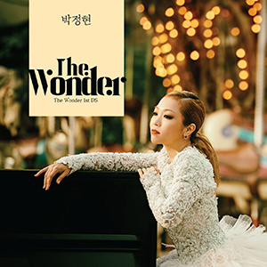

single box
연애 중
2017.04.12
01. 연애 중

The Wonder 1st DS
2018.06.19
01. 같은 우산
02. Minimal World (미니멀 월드)
The Wonder 2nd DS
2018.11.20
01. The End
Single
연애 중
2017.04.12
01. 연애 중
The Wonder 1st DS
2018.06.19
01. 같은 우산
02. Minimal World (미니멀 월드)
The Wonder 2nd DS
2018.11.20
01. The End
Regular
The Wonder
| 아티스트 | 박정현 |
| 발매일 | 2019.07.18 |
| 기획사 | ㈜문화인 |
| 01. | TITLE같이 | |
| 02. | 다시 사랑이 | |
| 03. | 기억하자 | |
| 04. | Seventeen | |
| 05. | 같은 우산 | |
| 06. | The End | |
| 07. | Minimal World (미니멀 월드) | |
| 08. | 연애 중 | |
| 09. | 별빛처럼 |
Composed by 박근태, 최진석 Lyrics by 유유진 Arranged by 박근태, 최진석
타이틀곡 '같이’는 박정현의 대표곡 '위태로운 이야기'를 비롯해 가요계 수많은 메가 히트곡을 작업해 온 히트작곡가 박근태가 프로듀싱한 팝 발라드 장르의 곡이다. 대중적 멜로디라인과 박정현의 순수하면서도 힘있는 보컬이 잔잔한 매력을 더한다.
Composed by 포스티노 Lyrics by 김이나 Arranged by 포스티노
가수 윤종신 ‘좋니’를 작곡한 포스티노와 스타 작사가 김이나가 의기 투합하고 뮤지션들이 인정하는 천재 기타리스트 조정치가 기타 연주를 맡은 발라드 곡으로, 과거의 상처로 밀어낸 사랑을 깨닫게 되는 애틋한 감정을 가사로 담았다. 박정현의 감성을 고스란히 느낄 수 있는 ‘믿고 듣는 박정현 표’ 발라드 곡이다.
Composed by 1of1, 이가은, 프라이머리, kriz Lyrics by Noheul (노을) Arranged by 1of1, 프라이머리
‘대세’ 프로듀서 프라이머리와 협업한 힙합 R&B 트랙으로, 연인에게 전하고픈 애정과 진심을 가사에 담았다. 감각적 사운드와 리듬감, 여기에 가사, 멜로디 등 모든 요소에 사랑스러움이 묻어나며 위트있는 에너지를 선사한다.
Composed by 박정현, Team Haerop Lyrics by 박정현 Arranged by Team Haerop
박정현이 작사, 작곡에 참여한 자작곡으로 싱어송라이터 박정현의 역량을 유감없이 느낄 수 있는 팝 댄스 장르의 곡이다. 사랑하는 이에 대한 소중함을 마치 열일곱 살로 돌아간 것 같다는 내용의 가사로 풀어내 재치를 더한다.
Composed by 정동환 (멜로망스), 달총 (치즈) Lyrics by 달총 (치즈) Arranged by 정동환 (멜로망스)
[The Wonder] 선공개 싱글음원 중 첫 번째로 공개되며 주목 받은 곡으로, 후배 아티스트인 멜로망스의 정동환과 치즈의 달총이 공동 작곡을 맡아 ‘대선배’ 박정현과의 특급 협업을 완성했다. 잔잔하고 서정적인 피아노 선율과 박정현 특유의 풍성한 음색이 절묘하게 녹아 든 감성 발라드 곡.
Composed by 박정현 Lyrics by 선우정아 Arranged by 선우정아
잔잔한 기타선율을 중심으로 헤어지는 순간을 마치 책을 쓰듯이 표현한 가사, 박정현의 담담하고 유니크한 가창력이 조화를 이룬 감성 이별송이다. 박정현이 직접 작곡한 이 곡은, 뮤지션 선우정아가 작사와 편곡, 코러스 등 세세한 영역에 참여해 독특한 감성을 불어 넣었다.
Composed by 박정현 Lyrics by 박정현 Arranged by Team Haerop
박정현의 자작곡이자 주목 받는 프로듀서팀 Team Haerop의 편곡으로 웅장한 매력을 자아내는 트랙이다. 드라마틱하고 웅장한 사운드가 깊은 울림을 선사하는 이 곡은 박정현의 폭넓은 음악적 스펙트럼을 완벽히 보여주는 곡이다.
Composed by 박근태, 최진석 Lyrics by 선우정아 Arranged by 박근태, 최진석
2017년 디지털 싱글로 발표되어 사랑받은 ‘연애중’이 이번 정규앨범에 새롭게 실렸다. 선우정아가 작사를 맡고 작곡가 박근태가 프로듀싱에 참여한 이 곡은 Neo-Soul과 Pop R&B 장르가 적절하게 조화된 트렌디한 장르 스타일이 돋보인다. 레트로 감성을 불러내는 기타톤과 로즈(Rhode) 건반이 감각적인 비트와 리듬감을 만들어내며 박정현 보컬의 감성을 극대화한다.
Composed & Lyrics by Jay Kim, 이방원사단, Sharon, 이안, 89 Arranged by 이방원사단, Sharon, 이안, 89
SBS 드라마 '절대 그이'의 OST로 별안간 ‘별빛처럼’ 다가온 주인공들의 운명적인 만남을 풍요로운 스트링 사운드와 함께 표현한 곡이다. 세련된 발라드곡으로 R&B의 요정 ‘박정현’과 잘 어울린다는 평을 받았다.